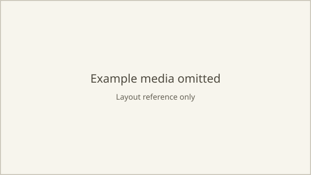

A close-up of Vale in a gallery. He realises the young man sitting next to him is Mercer and quietly says “You must be Mercer.” Keep the camera still.
Here's how I understood it. The full version is in the Script; edit anything there, or tell me here.
- One short video: a still close-up of Vale as he recognises Mercer and speaks.
- One image to start from, the opening frame. The camera doesn't move, so no ending frame is needed.
- I'll need to know what Vale and the gallery look like. The bench he sits on probably won't be seen this close.
- You didn't mention a look, so I used natural colour and soft daylight.
Here's how we'll get there. Each step fills in the matching tab on the right.
- Script — agree what happens. We're here.
- Assets — set up Vale and the gallery from your photos or a description.
- Storyboard — make the opening frame for you to check.
- Videos — make the video, then pick the version you like.
Two quick questions before we move on to assets.
Is Mercer visible at all?1 of 2
AKeep Mercer completely off-screen
Does the script look right?2 of 2
The script looks right.
Great. Mercer stays off-screen and the script is set.
Next, assets: I need to know what Vale and the gallery look like. For each one you can upload photos, describe it, or let me design it. I'll turn them into reference sheets for you to check before we use them.
How should I get Vale's look?Asset 1 of 3

Vale is a man in his late forties with short textured blond-brown hair, light stubble and a dark navy overcoat over a charcoal suit. I've attached a photo of the gallery. We don't need the bench.
Made 3 looks for Vale
Got it. Here's the plan for the assets:
- Vale: from your description. I've made three looks for you to choose from.
- The gallery: from your photo.
- Bench: skipped.
Once you've picked Vale's look, I'll make a reference sheet for him and for the gallery, so they look the same in every image.